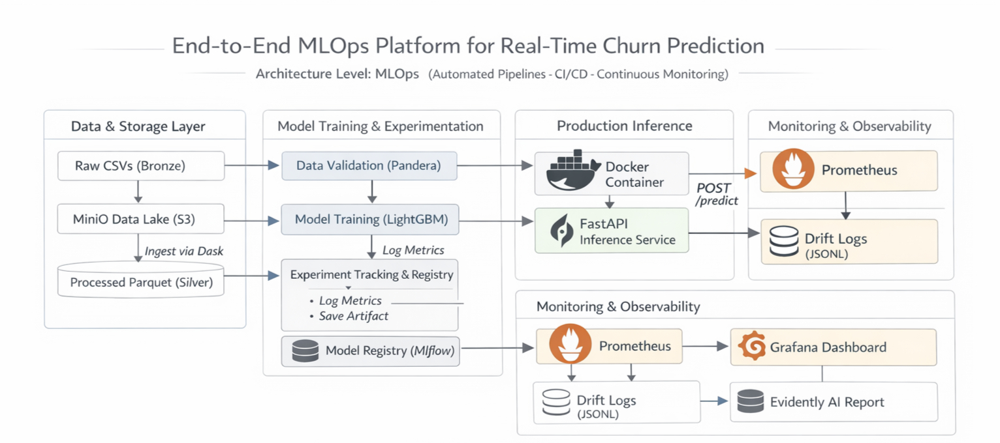
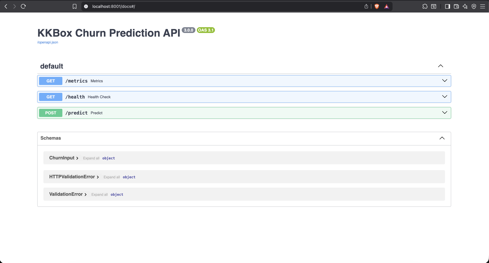
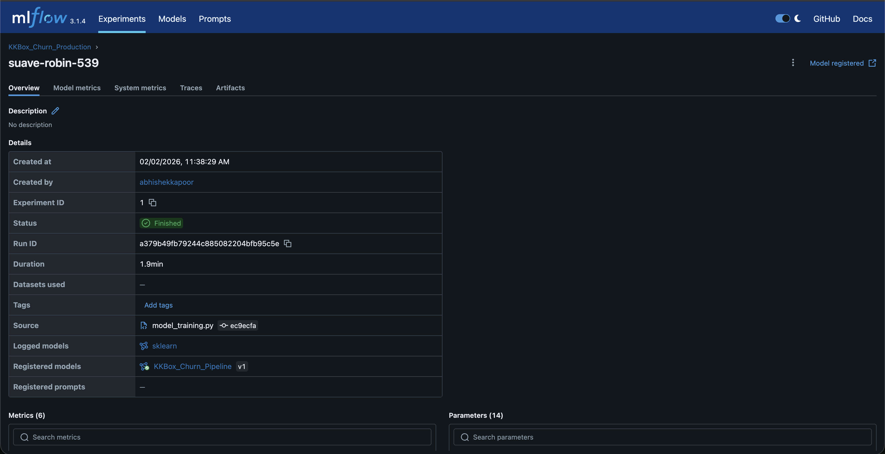
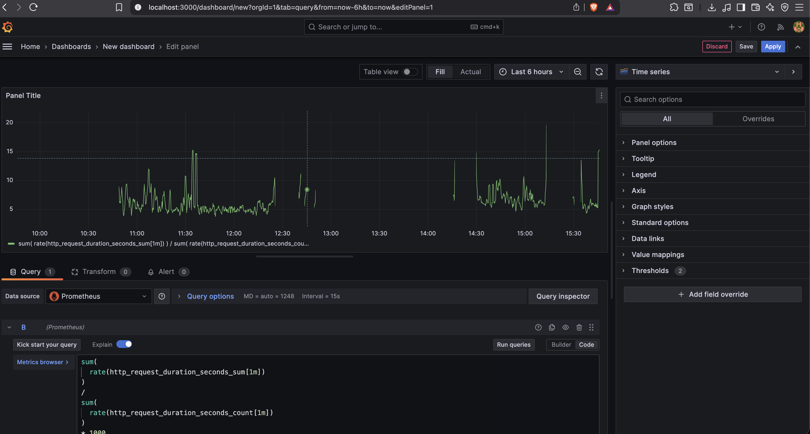

A production grade Machine Learning platform designed to predict user churn for large scale music streaming data.
The system emphasizes automation, reproducibility, and observability across the entire ML lifecycle, moving beyond notebook based experimentation.

The platform follows a layered MLOps architecture consisting of data ingestion, distributed feature engineering, unified training pipelines, production inference services, and monitoring components.
The data pipeline is designed to handle high volume user activity logs while maintaining reproducibility and memory efficiency.
To prevent training serving skew, all feature transformations are encapsulated inside Scikit learn pipelines and serialized with the trained model.
This ensures that the inference service always applies identical preprocessing logic as the training environment.

The trained model is deployed as a FastAPI service running inside Docker containers.

MLflow is used for experiment tracking and model registry, providing full traceability across code, data, and models.

The system is continuously monitored using Prometheus, Grafana, and Evidently AI.
Python, Dask, LightGBM, Scikit learn, MLflow, DVC, FastAPI, Docker, PostgreSQL, Prometheus, Grafana, Evidently AI